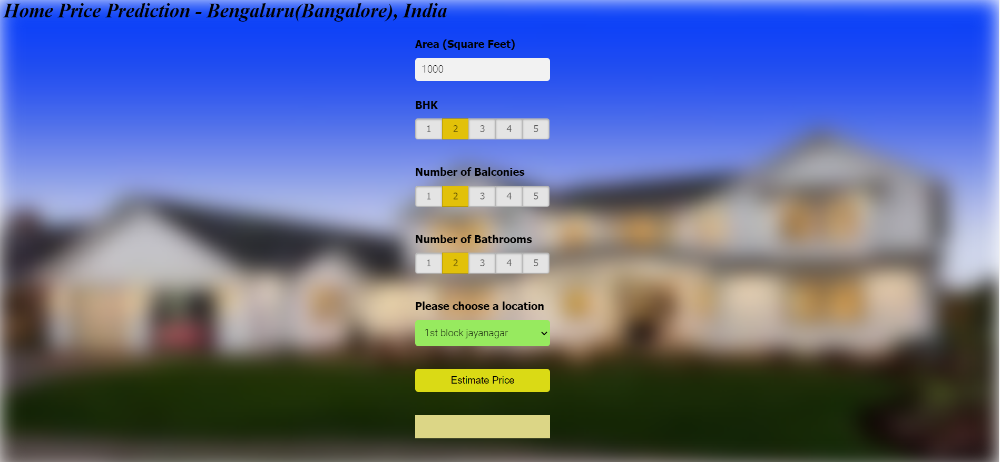

Image Reconstruction using Diffusion Transformers

I developed a PatchVAE model to encode facial features from the CelebA dataset, followed by training a Diffusion model using the VAE's latent representations. This approach successfully reconstructed and generated realistic human face images. The model achieved an impressive FID score of 14.2, highlighting its effectiveness in producing high-quality outputs.
| code | Reference Paper
Instance Segmentation: By location

I implemented an advanced instance segmentation framework inspired by the SOLO (Segmenting Objects by Locations) model. It features a ResNet backbone for robust feature extraction and a Feature Pyramid Network (FPN) to handle multi-scale object representations efficiently. The architecture consists of two main branches. The Category Prediction Branch assigns pixels to grid-based instance categories, leveraging spatial information to effectively localize and distinguish objects of varying sizes.
Meanwhile, the Mask Segmentation Branch generates accurate binary masks using a spatially sensitive, fully convolutional network, eliminating the need for traditional bounding boxes or complex post-processing. This end-to-end trainable system simplifies the segmentation pipeline, learning directly from mask annotations to enhance efficiency and deliver high performance across diverse object segmentation tasks.
| code | Reference Paper
Improving Depth Estimation of DinoV2

The research demonstrated that combining temporal information across frames reduces per-frame errors, enhancing the scaling accuracy of depth maps. The project explored methods to improve depth estimation in DINOv2 using iterative strategies. Initially, ORB features and phase correlation were applied to align depth maps of consecutive frames explicitly. This approach leveraged the spatial shifts between frames to average depth maps and achieved modest reductions in MSE with minimal latency. However, limitations in alignment accuracy due to perspective distortions motivated further refinement.
Subsequently, a CNN-based adapter was integrated between the DINOv2 encoder and depth adapter. This adapter utilized phase-correlation-derived pixel shifts as additional input to adjust and combine DINO features from consecutive frames. The CNN introduced an inductive bias for local feature alignment, leading to a significant 23.8% reduction in MSE, outperforming vanilla DINOv2-base while being faster. Regularization techniques were later introduced to preserve high-resolution details in depth maps, improving output quality while maintaining accuracy.
| code | Reference Paper
FitBit

Designed and developed a Django-based AI chatbot for health-related conversations, integrating PostgreSQL for robust patient data management and Langchain for LLM-agnostic model orchestration. Implemented dynamic entity extraction to capture key details like medications and appointment preferences, optimized memory usage for long conversations, and enabled automated escalation of appointment and treatment requests.
| Github code
Scalable ETL Pipelines with Microsoft Azure

In this project, I implemented a robust ETL (Extract, Transform, Load) pipeline using Azure cloud services to process and analyze data efficiently. The pipeline began with data ingestion from HTTP sources and SQL databases. Using Azure Data Factory (ADF), I created linked services to connect to these data sources and developed data pipelines to automate the extraction of raw data. The ingested data was stored in Azure Data Lake Storage Gen2 (ADLS Gen2) as the raw data layer.
For data transformation, I utilized Azure Databricks, where the raw data was processed through data cleansing, aggregation, and feature engineering to prepare it for downstream analysis. The transformed data was then stored back in ADLS Gen2 in a structured format. Finally, the processed data was imported into Azure Synapse Analytics, where it was further analyzed. This comprehensive ETL pipeline enabled seamless data movement and transformation, leveraging Azure's ecosystem for efficient data processing and analysis.
| Github code
Deepfake Detection

Deepfake detection research focuses on identifying and analyzing manipulated video content generated using advanced generative models. By curating extensive video datasets and developing innovative annotation frameworks, researchers aim to refine the detection of both visual and temporal artifacts. State-of-the-art Video Vision-Language Models (VLMs) such as VideoLaMA, BLIP, and LLaVA are evaluated by integrating synthetic data and annotated explanations to enhance the categorization of artifacts and improve detection accuracy. Additionally, methodologies like Kendall Tau’s correlation and reliability analysis are employed to verify data and align annotations. These techniques help assess inter-annotator agreement on deformation labels, providing robust benchmarks for evaluating the performance of current state-of-the-art detection models.
| Github code
Traversability Estimation

Developed a terrain classification model using Semantic Segmentation and an attention enhanced Fully Convolutional Network, achieving a 2% improvement in IoU. Enhanced off-road navigation for autonomous vehicles by optimizing path planning and terrain adaptability.
paper | code
Bangalore House Prediction

In this project, a machine learning model was developed to predict house prices in Bangalore using the sklearn library. The dataset was sourced from Kaggle and preprocessed using NumPy and Pandas for data cleaning, including outlier detection, feature engineering, and dimensionality reduction. The model was built using linear regression, with hyperparameter tuning implemented through GridSearchCV and performance evaluated using k-fold cross-validation.
The application was powered by a Flask server, which acted as the backend to handle HTTP requests. The Flask server loaded the saved machine learning model and processed user inputs like square footage and number of bedrooms to return predicted prices. A front-end interface was built using HTML, CSS, and JavaScript, allowing users to input property details and retrieve price predictions dynamically via calls to the Flask API. The entire workflow integrated Python-based tools and libraries, offering a robust and user-friendly application for real estate price prediction.
| code
Topic-Modelling-with-Latent-Dirichlet-Allocation
This project focuses on implementing Latent Dirichlet Allocation (LDA) for topic modeling, a natural language processing technique that classifies text into topics based on the corpus's underlying word distributions. Using libraries like NLTK, Gensim, and SpaCy, text preprocessing involved cleaning data with RegEx and preparing it for analysis. Key steps included generating word clouds to visualize word frequency distributions, computing coherence and perplexity scores to optimize the number of topics, and identifying the dominant topic for each document along with its percentage contribution. The LDA model revealed the proportion of documents belonging to the top six dominant topics, facilitating deeper insights into the dataset's structure. Interactive visualizations further enhanced the interpretability of the results, making the analysis accessible and insightful. This project demonstrated a robust approach to uncovering hidden thematic patterns in text data.
| code